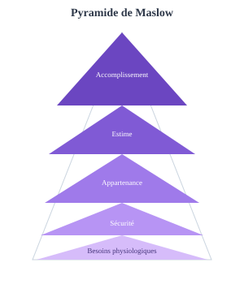

Psychologie positive
Psychologie positive

Quel est le raccourci vers le bonheur ?
Pas de raccourci miracle. Seligman (PERMA) identifie 5 piliers du bien-être :
- Positive emotions — émotions positives
- Engagement — flow, absorption
- Relationships — relations de qualité
- Meaning — sens, purpose
- Accomplishment — réalisation de soi
Doit-on se laisser porter par le flow ?
Le flow (Csikszentmihalyi) : état d'absorption totale quand défi et compétence sont équilibrés. Conditions : objectifs clairs, feedback immédiat, perte de conscience de soi.
Changer de mentalité change-t-il l'esprit ?
Les recherches sur la growth mindset (Dweck) montrent que croire que l'intelligence est développable améliore la persévérance. Effets réels mais parfois sur-estimés dans la vulgarisation.